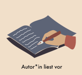
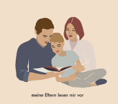
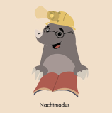
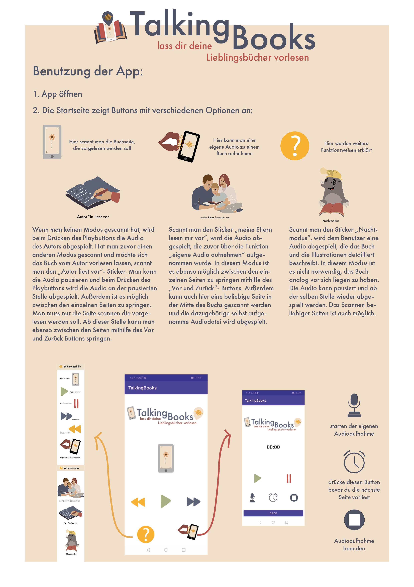

Android app · AI / ML Kit
ReadMyBook
An AI-based app with text recognition that reads a children's book aloud. Developed as a complement to a children's book by a private friend, the goal is to let children — especially those with busy parents — independently have a book read to them by scanning a page.
By scanning designated stickers, users can choose between three reading modes. Page recognition uses the text-recognition feature of Android's ML Kit; users can also navigate to the right page with button controls.
Designs of the buttons and graphics were created by Klarissa Okfen.
Three reading modes



Parents can record their own audio and set page transitions, so reading starts from the correct page. Besides recognizing the correct page through text recognition, users can also navigate with button controls.
How it works
The graphic below briefly explains the app's functionality (in German).

This project has been discontinued.
Dieses Projekt wurde eingestellt.